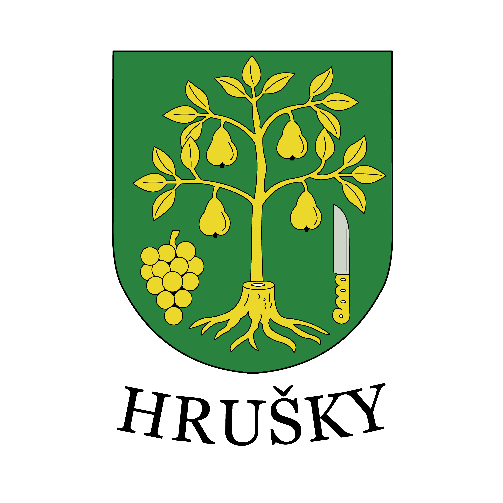
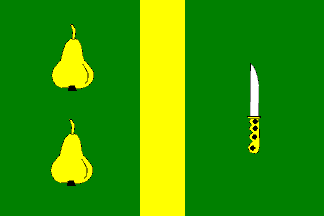

Hrušky jsou obec nacházející se v Jihomoravském kraji, nedaleko města Břeclav. Leží v oblasti jižní Moravy, která je typická úrodnou krajinou, vinařstvím, zemědělstvím a bohatými lidovými tradicemi. Obec má klidný venkovský charakter, ale zároveň se nachází v dostupné vzdálenosti od větších měst a významných míst regionu.
Název obce připomíná ovocnářskou minulost a vztah místních obyvatel k přírodě a zemědělství. Okolní krajina je tvořena poli, loukami, zahradami a cestami, které jsou typické pro rovinatou část jižní Moravy. Díky své poloze jsou Hrušky součástí oblasti, kde se prolíná historie, příroda i současný život obce.
Významnou událostí v novodobé historii obce bylo tornádo v roce 2021, které zasáhlo několik obcí na jižní Moravě včetně Hrušek. Tato událost výrazně ovlivnila podobu obce i život místních obyvatel. Přesto se Hrušky postupně obnovily a dodnes jsou příkladem soudržnosti, pomoci a odhodlání místní komunity.
Na tomto webu najdete základní informace o obci, její historii, přírodě, současnosti i událostech spojených s tornádem. Jednotlivé části webu jsou rozděleny pomocí rozcestníku níže, kde si můžete vybrat téma, které vás zajímá.
Vyberte si část webu, kterou chcete prozkoumat.
Historie obce, první zmínky a vývoj Hrušek v průběhu času.
Příroda v okolí obce, krajina jižní Moravy a zajímavá místa.
Události spojené s tornádem, které zasáhlo obec v roce 2021.
Současný život v obci, akce, komunita a moderní podoba Hrušek.
Fotografie obce a okolí zobrazené v přehledné galerii.
Zdroj: https://hrusky.cz/, Wikipedie